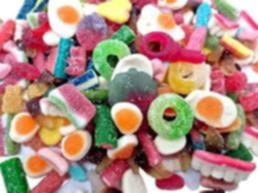

MY BIOGRAPHY
Hello! My name is John Andrew E. Soria and I’m 15 years old. I live in Solis St., Tondo, Manila. My birthday is August 10, 2009 and I was born in the Philippines. My family includes my dad, mom, 2 sisters, grandmas, Tito, Tita, and our pets. (3 cats and 1 dog, all street animals we found, which is very cool).
and I’m 15 years old. I live in Solis St., Tondo, Manila. My birthday is August 10, 2009 and I was born in the Philippines. My family includes my dad, mom, 2 sisters, grandmas, Tito, Tita, and our pets. (3 cats and 1 dog, all street animals we found, which is very cool).
What are my favorites? Hmm, my favorite foods are pizza, pasta, and anything sweet because I have a sweet tooth. My favorite activities include cycling, cooking, playing video games, and talking to people, even though I don’t socialize much. I enjoy sharing what happened during my day, which is very nice.
Cooking makes me happy because it helps replace my stress with creativity. I think it distracts my mind, which is pretty cool. Cycling also makes me happy because I get to explore outside, see new things, and feel the breeze, which cools me off. Lastly, being with my friends makes me happy. I’m very comfortable with them and get to show my other personality, which is really fun. Did you know that my friend’s dad knew my grandpa? Cool, right? They used to drink and box each other when they were drunk—so epic.
The most impressive event from my childhood is when I learned how to ride a bike. My best friend taught me how to ride when I was 7. He was really good at it, and I learned to ride in less than an hour! Just look straight and pedal—that’s how I became the cyclist I am today (still practicing though).
Were there any challenging experiences? Absolutely. One of the hardest was entering high school after the pandemic. DEPED brought back face-to-face classes, and I had gotten used to staying home due to the lockdowns and online classes. Socializing became tough, especially because I’m introverted, and it felt like I had just entered high school, which felt like hell. My classmates were difficult to deal with, but I overcame this challenge by making fun friends who helped me become more outgoing.
As for my future plans, I’m thinking of becoming a chef, which is my main goal right now. I love cooking, and I think I can use my skills in that profession. I’m also considering psychology as a second option because it’s fascinating. My dream is to provide for my family, retire my mom, get a house, a life, a purple car, and maybe build a great collection of bikes.
Finally, my life motto: Fake it till you make it. And that’s all for my biography. Thank you for reading!